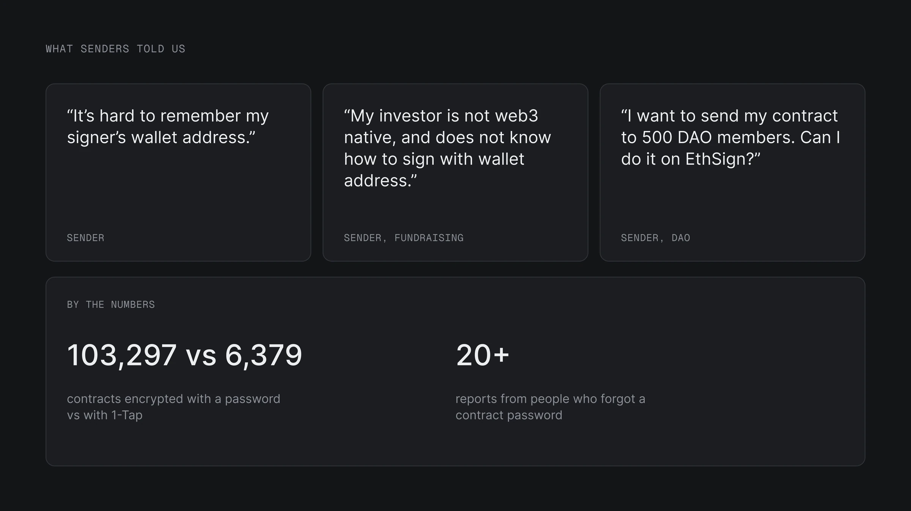
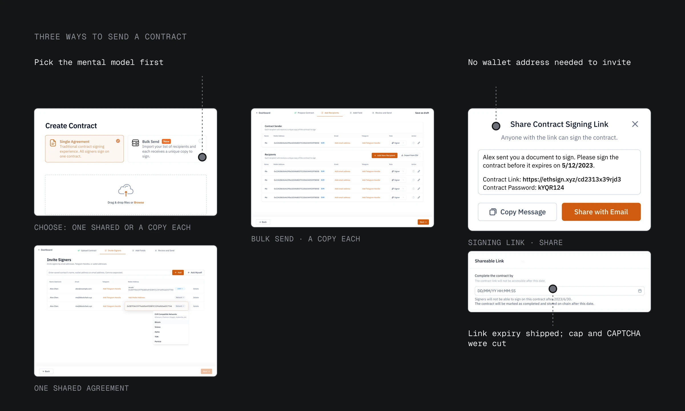
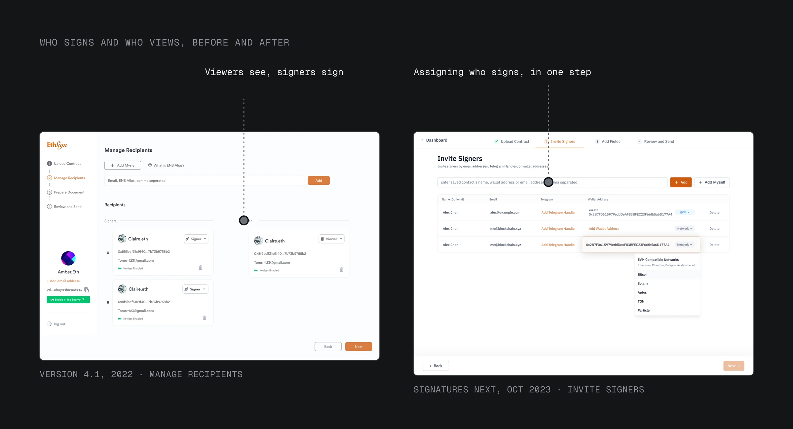
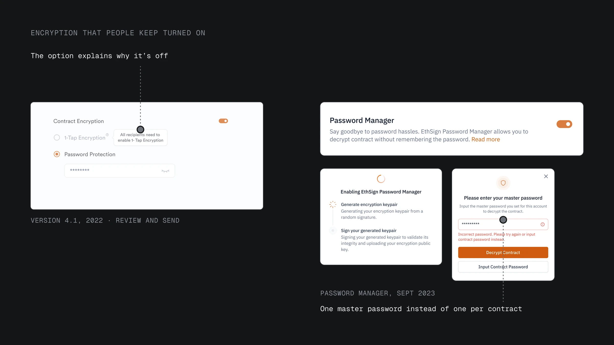
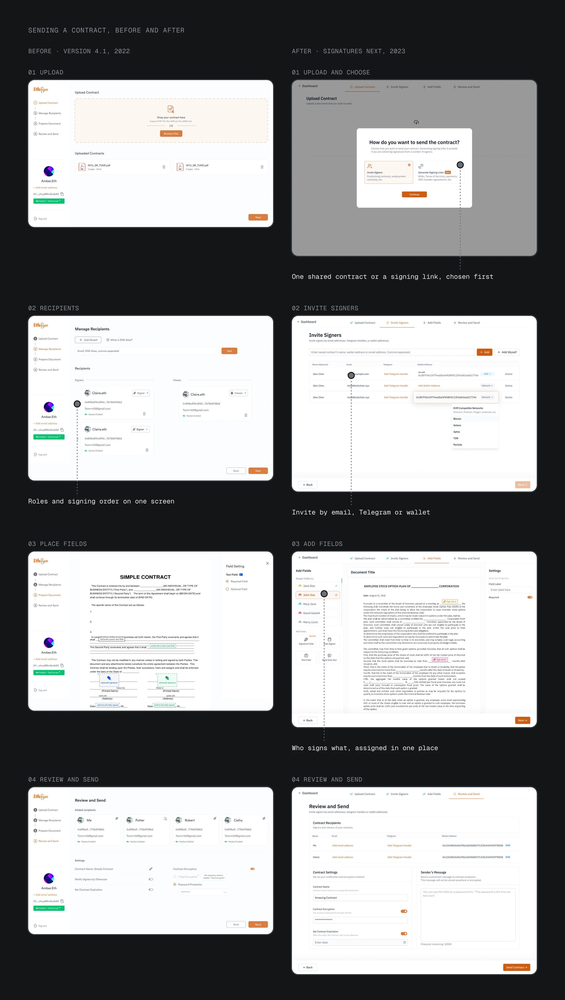

02 · Pain
Every signer had to bring something crypto
Senders told us: "It's hard to remember my signer's wallet address." "My investor is not web3 native, and does not know how to sign with wallet address." "I want to send my contract to 500 DAO members. Can I do it on EthSign?"
Senders were founders, teams and DAOs (online communities that vote together); their signers were often new to crypto. Version 4.1, which I redesigned in 2022, was a step-by-step flow built for one-to-one signing.
Encryption had the same problem. By April 2023, 103,297 contracts were protected by a password and only 6,379 by 1-Tap encryption, which opens a contract with a key each signer sets up in advance. More than 20 people reported forgetting a contract password.
Reach and security broke at the same step: the moment a signer had to bring something crypto. A wallet address, a password, a key enabled in advance. Signatures Next, the 2023 rebuild, moves each of those asks to the sender.

02 · Pain
Every signer had to bring something crypto
- "It's hard to remember my signer's wallet address."
- "My investor is not web3 native, and does not know how to sign with wallet address."
- Senders were founders, teams and DAOs (online communities that vote together); their signers were often new to crypto.
- Reach and security broke at the same step: the moment a signer had to bring something crypto.
03 · Sending
Choose how to send before who signs
Senders could get one recipient list with settings for each person covering every case, or pick the kind of sending first. The three kinds follow different rules, and mixing them in one list made it hard to read, so the sender now picks the kind first.
The sender now picks one of three before adding anyone:
- One shared contract: the sender adds each signer, and everyone signs the same document.
- A copy each (Bulk Send): the sender adds each signer, and every signer gets their own contract.
- A signing link: the sender adds no one. Anyone with the link can sign, on one shared contract or on their own copy.
It costs one more decision at the very first step.

03 · Sending
Choose how to send before who signs
- The sender now picks one of three before adding anyone:
- One shared contract: the sender adds each signer, and everyone signs the same document.
- A copy each (Bulk Send): the sender adds each signer, and every signer gets their own contract.
- A signing link: the sender adds no one, and anyone with the link can sign.
04 · Usability test
A test removed the wallet address and role
In September 2023 we tested the prototype with senders and signers. Two asks in the invite step got in the way. A wallet address: the other person often didn't want to give one, and the flow stopped there. And a role for each person, set apart from choosing who signs which field.
After the test, the invite step dropped both asks.
- No wallet address needed. An invite takes an email, a Telegram handle or a wallet.
- No role for each person. Everyone on the contract signs; viewers get a view link. Who signs which field is set in one place, the field editor.
Senders lost the viewer role inside the contract.

04 · Usability test
A test removed the wallet address and role
- In September 2023 we tested the prototype with senders and signers.
- After the test, the invite step dropped both asks.
- Senders lost the viewer role inside the contract.
05 · Encryption
One master password replaced one per contract
Every contract had its own password, and people couldn't keep track of them. 1-Tap was the earlier fix: a key each signer sets up once, so contracts open without a password. But it only worked if every signer had set it up in advance, so in 4.1 the option was usually greyed out, with "All recipients need to enable 1-Tap Encryption." Making it the default would not have changed that.
I designed a Password Manager to replace the password for each contract. It creates an encryption key, protected by one master password and the user's wallet, so contracts open without their own passwords. People still keep the master password.

05 · Encryption
One master password replaced one per contract
- Every contract had its own password, and people couldn't keep track of them; 1-Tap only worked if every signer set it up in advance.
- I designed a Password Manager to replace the password for each contract.
06 · Before and after
Signers are reached by email, Telegram or a link, not a wallet address
In Signatures Next, a signer can be reached by email, Telegram handle or link. In 4.1, the sender needed every signer's wallet address, and each signer had to keep a password for every contract or set up 1-Tap in advance. Now the sender chooses how to send first, and one master password replaces a password per contract.

06 · Before and after
Signers are reached by email, Telegram or a link, not a wallet address
- In Signatures Next, a signer can be reached by email, Telegram handle or link.
07 · Guardrails
The signing link should have shipped with a limit on who can sign
Anyone with a signing link can sign. That is the point, and the risk. When I designed the link, I proposed a cap on signers per link and a CAPTCHA; the team cut both to ship on time, and link expiry shipped. The link did what it was for: senders reached people without collecting addresses. It also carried campaigns, and nothing in the counts told their sign-ups apart from agreements.
Now I'd ship one minimal guardrail with the link, and agree before launch on what counts as a real signer.
07 · Guardrails
The signing link should have shipped with a limit on who can sign
- Anyone with a signing link can sign.
- Now I'd ship one minimal guardrail with the link, and agree before launch on what counts as a real signer.
08 · After launch
Sign reported 1 million users ten months after launch
Ten months after launch, Sign reported that EthSign Next had reached 1 million users (Sign on X, Jun 6, 2024). Campaigns used links heavily, so those counts mix agreements and sign-ups.
08 · After launch
Sign reported 1 million users ten months after launch
- Ten months after launch, Sign reported that EthSign Next had reached 1 million users.
- Campaigns used links heavily, so those counts mix agreements and sign-ups.